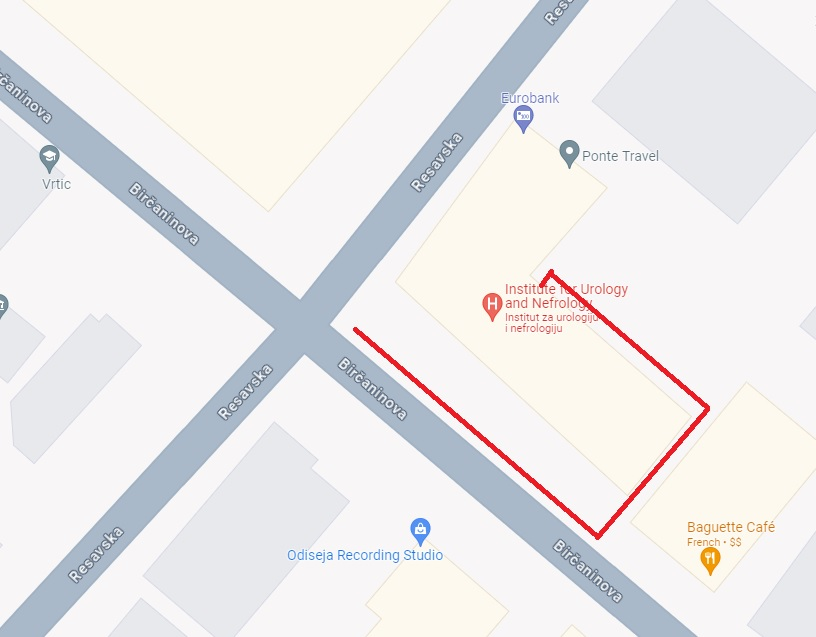

Preko klinike Natal u Podgorici, moguće je emailom kontaktirati prof dr Nadeždu Basaru, našu istaknutu onkološkinju koja radi u Nemačkoj. Potrebno je dostaviti dokumentaciju u digitalnom formatu emailom i uplatiti 240EUR za uslugu. Rezultat je detaljna analiza trenutne situacije sa objašnjenjem o eventualnim opcijama lečenja u inostranstvu i Srbiji. Ako vam je potrebno dodatno mišljenje, sugerisao bih svima da kontaktiraju dr Basaru. Posvetila je punu pažnju analizi rezultata koji su joj dostavljeni.
Turskoj klinici Ačibadem se možete obratiti elektronskim putem, potrebno je dostaviti dokumentaciju u digitalnom formatu emailom. Osoba koja je posrednik između vas i klinike u Turskoj je detaljna, ekspeditivna i prijatna. Mi smo odgovor dobili izuzetno brzo - 2-3 dana od dostavljanja dokumentacije. U odgovoru je bio naveden plan lečenja sa cenama. Ova procena se ne plaća. Plan lekara u Ačibademu je bio da snize nivo bilirubina odblokiranjem zakrčenih žučnih puteva. U dokumentaciji koju smo im dostavili je pisalo da su žučni putevi prohodni, te je iz toga moglo da se zaključi da je nivo bilirubina posledica izuzetno lošeg stanja jetre (posledica metastaza). Sugestije poznanika i prijatelja su išle u smeru da sve što može da se radi u Turskoj, može i u Beogradu. Mi smo se nadali tretmanu nekim od modernih aparata (npr. Cyber nož), međutim, ta aparatura ne može da leči sve vrste raka.
U Beogradu radi klinika Onkomed. Razlika izmedju Onkomeda i Instituta za onkologiju je što Onkomed radi po drugačijim standardima. Ovo podrazumeva da se pacijentu može omogućiti da primi hemioterapiju koju Institut za onkologiju još ne primenjuje (ukoliko opšte zdravstveno stanje pacijenta to dozvoljava). Onkomed je sugerisao da posetimo interventnog radiologa, radi odblokiranja žučnih puteva. Žučni putevi nisu bili zakrčeni i to je pisalo u dokumentaciji koju smo im dostavili. Informacija o prohodnosti žučnih puteva je u tom trenutku bila stara ispod 3 nedelje.
Ako je pacijent preko 65 godina starosti, preporučujem da se obratite Zavodu za gerijatriju i palijativno zbrinjavanje koji se nalazi u ulici Kralja Milutina 52 u Beogradu.
Prijavu je moguće uraditi i elektronskim putem, uputstva možete videti ovde: https://gerontology.co.rs/kontakt/ Odgovor na prijavu je izuzetno brz. Pošto smo im dokumentaciju dostavili u toku praznika, javili su se prvog radnog dana posle praznika, a ekipu koja će proceniti trenutno stanje pacijenta su poslali narednog dana. U ovoj instituciji rade ljudi koji imaju iskustva sa starijim pacijentima, koji često imaju više zdravstvenih tegoba istovremeno, pa je nega dodatno komplikovana.
Uprkos entuzijazmu, u našem slučaju, radili su mladi i neiskusni zdravstveni radnici. Nisu opremljeni osnovnom aparaturom za dijagnostiku, lekovi koje mogu da primenjuju su opšteg tipa i upitno je da li su adekvatni za tretiranje onkoloških tegoba.
Kod pojedinih pacijenata, potrebno je tretirati izuzetno jake bolove. Postoji više klinika u Beogradu koje se bave bolom. Mi smo išli u Ambulantu za bol Kliničkog centra do koje smo došli po preporuci hitne pomoći. Hitna pomoć je izašla na teren zbog bolova, i napisali su preporuku. Sa tom preporukom smo otišli kod izabranog lekara koji treba da napiše uput za specijalistički pregled u Ambulanti za bol Kliničkog centra. Ovo je moguće i bez preporuke hitne pomoći, ako je pacijent u stanju da sam ode na pregled.
Ambulanta za bol se u trenutku pisanja ovog teksta nalazi dislocirano iz kruga Klinickog centra Srbije. Nalazi se u zgradi Instituta za urologiju i nefrologiju na uglu Resavske i Birčaninove ulice. Ambulanta za bol se nalazi u pasažu zgrade. Krenite uz Birčaninovu ulicu uz zgradu Instituta za urologiju, prođite kroz prvi prolaz za automobile sa leve strane. Kada prođete prolaz, krenite levo niz stepenice, uz zgradu. Na dnu stepenica sa leve strane je Ambulanta za bol. 
Došao sam bez "terminskog uputa", tj. imali smo uput koji je na zaglavlju imao napomenu "hitno". Sestra koja prima dokumentaciju nije htela da me uzme u razmatranje, jer sam bez pacijenta i sa neadekvatnim uputom. Posle napomene da je pacijent u jakim bolovima, primila me je lekarka koja je napisala sugestiju za flastere protiv bolova i morfijumske kapi. Sa tim dokumentom se ponovo ide kod izabranog lekara da napiše recept za pomenute lekove.
Ukoliko bol postane prejak za delovanje flastera protiv bolova, pacijentu se daju i morfijumske kapi.
Obratite specijalno pažnju na doziranje ovih kapi, jer lekari opšte prakse mogu da pogreše sugerisanu dozu.
Na našu sreću, u državnoj apoteci je radila iskusna farmaceutkinja koja je ispravila ovo doziranje i detaljno mi objasnila korišćenje flastera i morfijuma.